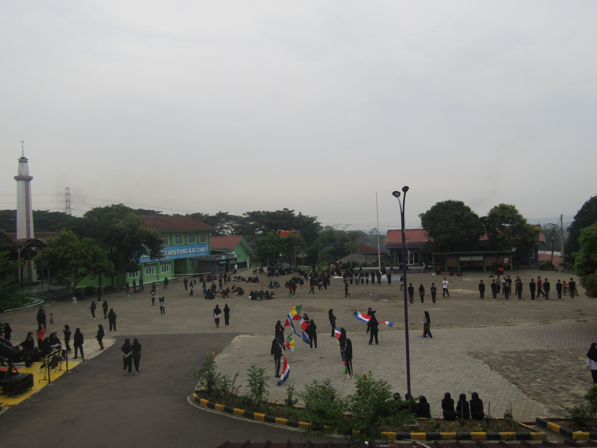

Pendiri Pesantren
Faidzaa ‘azzamta fatawakkal ‘ala allah. Kata-kata yang sering
diucapkan oleh Drs KH Ahmad Dimyati. Sebuah falsafah hidup,
bagaimana sikap seseorang dalam menghadapi kehidupannya. KH.Ahmad
Dimyati lahir pada tangal 12 pebruari 1955 di kampung Bauwan, Serang
Banten. Beliau terlahir dari pasangan Nurhalim bin Ilyas dan Siti
Mardiyah binti Nawiyah. Beliau terlahir dari keluarga kurang mampu,
bapak beliau hanya berprofesi sebagai pedagang daging sapi dan
kerbau, sedangkan ibunda beliau hanya sebagai seorang ibu rumah
tangga. Beliau merupakan anak bungsu dari tujuh bersaudara, yaitu:
(Almh.) Atiyah, H. Damanhuri, A. Sanusi, (Almh.) Halimah, Hj.
Juwairiyah, Hj. Qibtiyah, (Alm) Drs. KH. Ahmad Dimyati.
 Daarul Uluum Lido 2010
Daarul Uluum Lido 2010
Kurikulum
Kurikulum di Pesantren Modern Daarul Uluum Lido mengambil untuk
kenegrian dari kementrian Pendidikan dan untuk ilmu agama mereka
mengambil dari Kurikulum pesantren modern daarus salam Gontor yang
menjadi acuan pesantren ini dalam membina dan mengasuh santri di
dalam pesantren. Sistem belajar pesantren ini menganut sistem
boarding school yaitu sistem belajar ditempat atau menginap.
Yang diharapkan para santri bisa menjadi generasi yang mandiri dalam
menghadapi kehidupan yang modern ini.
Intrakulikuler
 Potret UAS Santri
Potret UAS Santri
Kegiatan Intrakulikuler di pesantren modern daarul uluum lido
dimulai sejak pagi jam 07.00 hingga jam 15.00. Kegiatan
intrakulikuler ini wajib diikuti oleh seluruh santri karna
termasuk dalam kegiatan wajib pesantren. Dilakukan selama 6 hari
dari hari senin hingga sabtu dan untuk minggu seperti sekolah lain
nya itu adalah hari libur.
Extrakulikuler

Kegiatan Ekstrakulikuler Sore
Kegiatan Extrakulikuler di Daarul Uluum Lido adalah kegiatan
tambahan penunjang kegiatan intrakuliker bagi para santri yang
memiliki bakat dan minat yang terpendam dalam dirinya. Banyak
Extrakulikuler yang diajarkan di Pesantren ini. Mulai dari
Robotik, Science, IKAPALA, PRAMUKA, Marching Band, Paskibra, DLL.